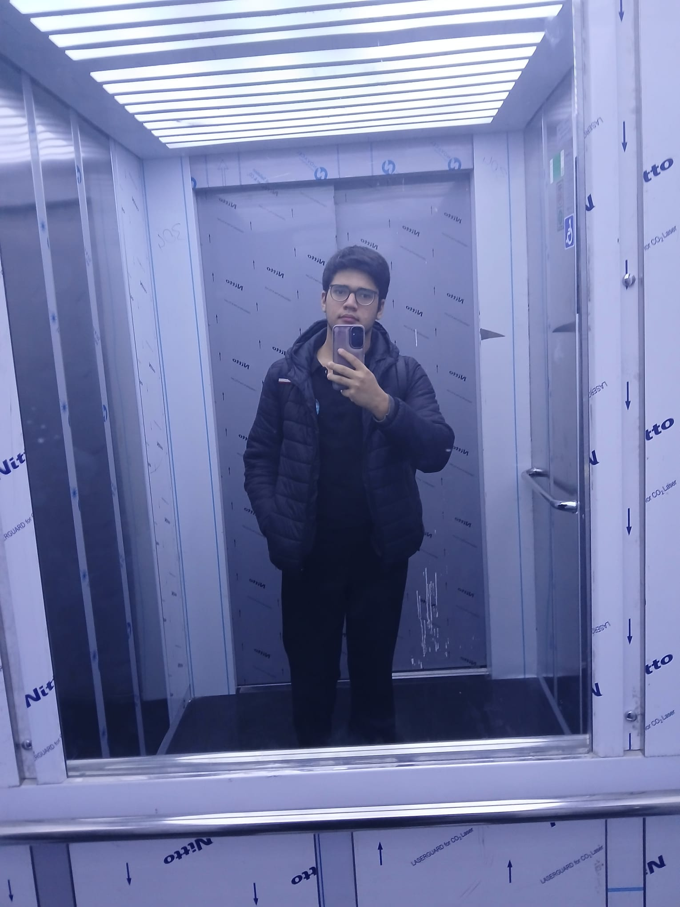
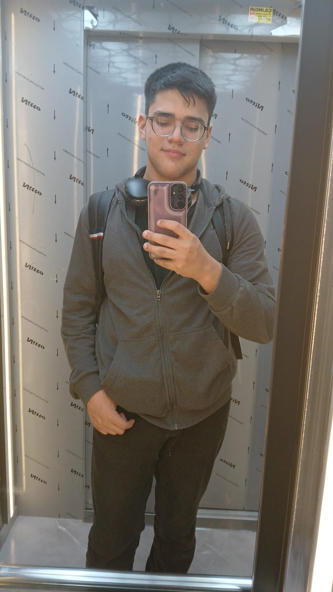
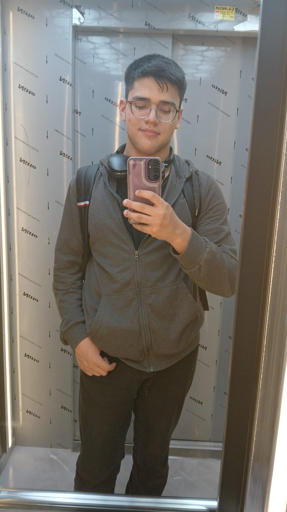
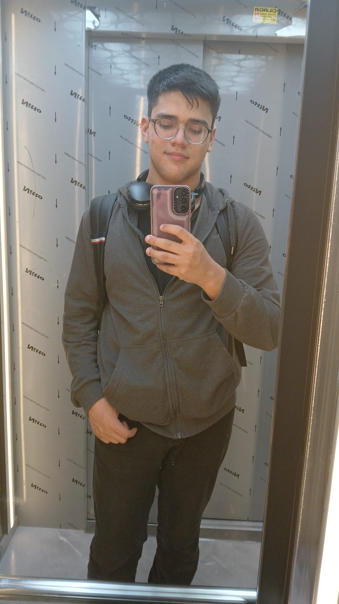

FURKAN AYDUK

 



Sevgili Furkan Ayduk, Engelliler Günün kutlu olsun kanka…
Yani fiziksel mi ruhsal mı tartışılır ama resimlere bakınca ikisi de var gibi aq.
Bu fotoğraflara bakıp bakıp “ulan ben neymişim be” diyorsundur şimdi. Haklısın, efsanesin.
Dört fotoğrafın dördü de ayrı komik ya… Hangisini çerçeveletip başucuna assan diye düşünüyorsundur. Hepsi olur kral!
Nasıl olsa oturmaktan bıkmadın, rahat rahat izle bu siteyi. Biz senin için yaptık, biraz da gülelim diye.
Seni seven, ama bayağı da gömmen arkadaşların.